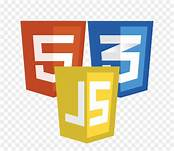

CSS (Cascading Style Sheets ou Folhas de Estilo em Cascata) é uma linguagem de estilo (en-US) usada para descrever a apresentação de um documento escrito em HTML ou em XML (incluindo várias linguagens em XML como SVG, MathML ou XHTML). O CSS descreve como elementos são mostrados na tela, no papel, na fala ou em outras mídias.
JavaScript é uma linguagem de script orientada a objetos, multiplataforma. É uma linguagem pequena e leve. Dentro de um ambiente de host (por exemplo, um navegador web) o JavaScript pode ser ligado aos objetos deste ambiente para prover um controle programático sobre eles.
O Bootstrap é uma ferramenta gratuita para desenvolvimento HTML, CSS e JS. Crie protótipos rápidamente ou aplicações completas com nossas variáveis e mixins Sass, sistemas de grid responsivo, componentes pré-construídos e poderosos plugins com jQuery.
A jQuery é uma biblioteca JavaScript que tem por lema “escrever menos e fazer mais”, ou seja, ela permite fazer com menos linhas de código o que seria bem mais complexo com JavaScript “puro”. Entre seus principais recursos está a manipulação do DOM (Document Object Model), que é simplificado por suas funções e seletores.
